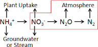
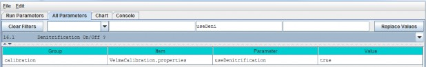
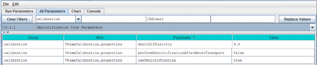
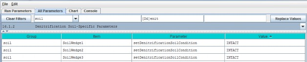
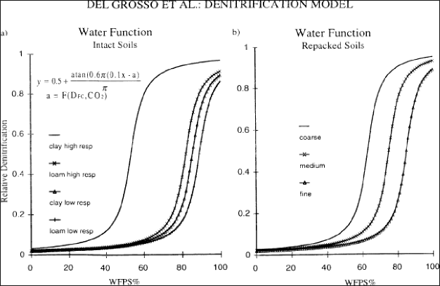

Denitrification
Denitrification is the microbially-mediated conversion of nitrate (NO3-) to nitrous oxide(N2O) and nitrogen gas (N2). This process is represented in the red-outlined area in the diagrambelow.

Nitrate that is not denitrified or taken up by plants can be readily transported to ground and surfacewaters (the high mobility of NO3- in soil is because both are negatively charged). Thus,
denitrification can be important for protecting water quality. On the other hand, if denitrification does not goto completion (stops at N2O instead of N2) it can increase atmospheric inputs of N2O, a potentgreenhouse gas.
The denitrification subroutine in VELMA v1.0 and v2.0 is based on Del Grosso et al. 2001. However, VELMA v2.0 includes recent updates to equations and correction to parameter values described in Dr. Stephen Del Grosso's (steve.delgrosso@ars.usda.gov) NGAS spreadsheet model.
16.1 - Denitrification On/Off?
Select "16.1 Denitrification On/Off ?" from the All Parameters drop-down menu to specify whether to turn thedenitrification subroutine on (true) or off (false).

Parameter Definitions
| Parameter Name | Parameter Description |
|---|---|
| setNitrogenFunctionSelection | When set "false" daily denitrification amounts are ignored and VELMA's biogeochemistry submodel behaves as if the denitrification amount is zero. When set "true"(default) denitrification occurs normally. |
16.1.1 - Denitrification Core Parameters
Select "16.1.1 Denitrification Core Parameters" from the All Parameters drop-down menu to specify denitrificationsubroutine parameter values. These global parameters are applicable to all soil types.

Parameter Definitions
| Parameter Name | Parameter Description |
|---|---|
| denitDiffusivity | This is the value of the "a" parameter in Del >Grosso etal. (2000) fig.7(a). It controls the >shape of the logistic function that defines the>response of "relative denitrification" (0.0 - >1.0) to water filled pore space (WFPS%). See calibration notes at the end of section >16.0, below. |
| performDenitrificationAfterWaterTransport | When set "true" daily denitrification amounts are calculated AFTER vertical and lateral transportation of chemicals by water occurs. When set "false"(default) daily denitrification occurs BEFORE water transport. |
| useDenitrification | When set "false" daily denitrification amounts are ignored and the PSM model behaves as if thedenitrification amount is zero. When set "true" (default) denitrification occurs normally |
16.1.2 - Denitrification Soil-Specific Parameters
Select "16.1.2 Denitrification Soil-Specific Parameters" from the All Parameters drop-down menu to specify thefollowing set of denitrification parameters for each soil type in your watershed. There is just one parameterper soil type (3 soil types are shown in the screenshot below).

Parameter Definitions
| Parameter Name | Parameter Description |
|---|---|
| setDenitrificationSoilCondition | Defines soil condition with respect to denitrification calculations. Value must be one of the following: "INTACT" (the default value) or"REPACKED_COARSE" or "REPACKED_MEDIUM" or "REPACKED_FINE" The value is case-sensitive and must appear exactly as given here (but with the surrounding double-quotes). Inpractice, Del Grosso's NGAS spreadsheet uses "INTACT" = undisturbed soils, and "REPACKED_MEDIUM" and"REPACKED_FINE" = medium or fine textured soil samples, respectively, that have been repacked in thelab after field collection. |
Calibration Notes:
The denitrification subroutine has been extensively applied to agricultural systems by the NGAS model developers(Parton et al. 2001; Del Grosso et al. 2000 and 2006). The parameter values used in the model seem to be fairlyrobust across the wide range of conditions reported by the authors. When calibrating the denitrificationsubroutine for a new site, we recommend that you initially focus on just two parameters (assuming all thetrue/false options are set up correctly).
These are the yellow-highlighted parameters above: denitDiffusivity and setDenitrificationSoilCondition.
The denitDiffusivity parameter controls the shape of the logistic function that defines the response of"relative denitrification" (0.0 - 1.0) to water filled pore space (WFPS %). Figure 7 in Del Grosso et al. (2000)illustrates this:

Thus, you will need to adjust the denitDiffusivity parameter ("a" in Figure 7) to obtain a response forthe soil texture that is most appropriate for your watershed. You will also need to specify "INTACT" forundisturbed soils. "REPACKED_MEDIUM" or "REPACKED_FINE" refers to soil columns that have been reconstructed inthe laboratory (Del Grosso et al. 2000). You will need to decide if the REPACKED choices are appropriate forcompacted field soils, e.g., under high tillage practices.
References for section 16.0 (all subsections sections)
Del Grosso, S. J., Parton, W. J., Mosier, A. R., Ojima, D. S., Kulmala, A. E., & Phongpan, S. (2000). Generalmodel for N2O and N2 gas emissions from soils due to dentrification. Global Biogeochemical Cycles, 14(4),1045-1060.
Del Grosso, S. J., Parton, W. J., Mosier, A. R., Walsh, M. K., Ojima, D. S., & Thornton, P. E. (2006).DAYCENT national-scale simulations of nitrous oxide emissions from cropped soils in the United States. Journalof environmental quality, 35(4), 1451-1460.
Parton, W. J., Holland, E. A., Del Grosso, S. J., Hartman, M. D., Martin, R. E., Mosier, A. R., ... &Schimel, D. S. (2001). Generalized model for NO x and N2O emissions from soils. Journal of Geophysical Research:Atmospheres (1984-2012), 106(D15), 17403-17419.